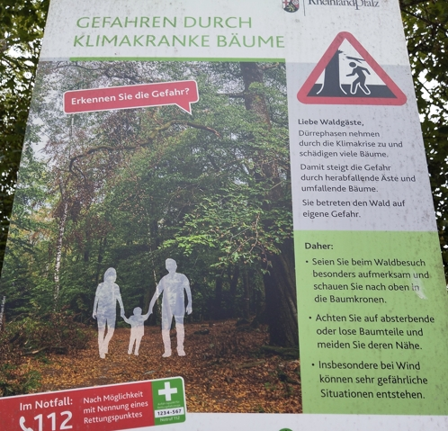

Gefahren durch klimakranke Bäume
assistant
- Source
- Schild der Landesforsten am Waldeingang
- Place
- Other
- Situation
- Wanderung
- Topic
- Wandern

Transcription
Gefahren durch klimakranke Bäume
Erkennen Sie die Gefahr?
Liebe Waldgäste, Dürrephasen nehmen durch die Klimakrise zu und schädigen viele Bäume.
Damit steigt die Gefahr durch herabfallende Äste und umfallende Bäume.
Sie betreten den Wald auf eigene Gefahr.
Daher: Seien Sie beim Waldbesuch besonders aufmerksam und schauen Sie nach oben in die Baumkronen.
Achten Sie auf absterbende oder lose Baumteile und meiden Sie deren Nähe.
Insbesondere bei Wind können sehr gefährliche Situationen entstehen.
Im Notfall: 112. Nach Möglichkeit mit Nennung eines Rettungspunktes.
Meaning
Dangers from trees made sick by the climate. Do you recognise the danger? Dear forest visitors, dry periods are increasing because of the climate crisis and damage many trees. So the danger from falling branches and falling trees rises. You enter the forest at your own risk. Therefore: be especially careful when you visit the forest and look up into the treetops. Watch out for dying or loose parts of trees and keep away from them. Above all when it is windy, very dangerous situations can arise. In an emergency call 112, and if possible name a rescue point (Rettungspunkt): the green signs with a number along forest roads, where an ambulance can find you.